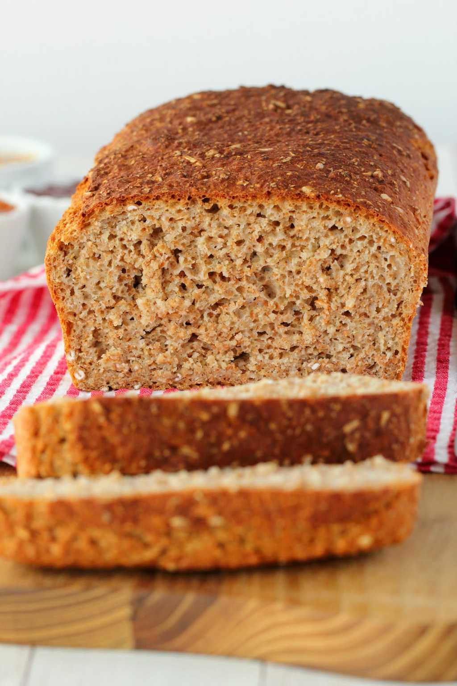

No-fail wheat bread

Description
Simple 5-ingredient whole wheat bread. You just don’t get easier than this
no-fail and no-knead recipe! Hearty, wholesome, nourishing and delicious!
If you don’t feel like cooking, just make a loaf of this (it barely counts as ‘cooking’
it’s too easy), and serve it with a huge salad, maybe some roasted garlic hummus and
avocado and various other toppings and dinner is done and dusted!
Ingredients
- 4 cups whole wheat flour (520 g)
- 1 packet Instant Yeast (2 1/4 tsp)
- 1/2 tsp salt
- 2 tsp maple syrup
- 2 cups warm water (480 ml)
Instructions
- Add the flour to a mixing bowl with the yeast and salt and mix together.
- Dissolve the maple syrup in the warm water and then add to the dry ingredients.
- Mix – don’t knead – until you have a sticky well combined dough.
- Transfer to a greased 9×5 loaf pan. You can also line the bottom with parchment paper
if you think there will be any chance of it sticking.
- Cover and leave to rise for 20 minutes.
- While the dough is rising, preheat the oven to 390°F (200°C).
- After 20 minutes when the dough has risen, bake in the oven for 40 minutes.
- Absolutely BEST when fresh, but will keep for a day or two in a closed container.
After which you can make the most delicious toast.
Source: Loving it vegan